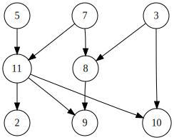

Graphs
 ^[File:Directed acyclic graph 2.svg. (2016, May 3). Wikimedia Commons, the free media repository. Retrieved 03:05, February 8, 2020 from https://commons.wikimedia.org/w/index.php?title=File:Directed_acyclic_graph_2.svg&oldid=195167720.]
The most general version of a non-linear data structure is the graph, as shown in the diagram above. A graph is a set of nodes that contain data, as well as a set of edges that link two nodes together. Edges themselves may also contain data.
Graphs are great for storing and visualizing not just data, but also the relationships between data. For example, each node in the graph could represent a city on the map, with the edges representing the travel time between the two cities. Or we could use the nodes in a graph to represent the people in a social network, and the edges represent connections or friendships between two people. There are many possibilities!
When to Use a Graph
Graphs are a great choice when we need to store data and relationships between the data, but we aren’t sure exactly what structures or limitations are present in the data. Since a graph is the most general and flexible non-linear data type, it has the most ability to represent data in a wide variety of ways.